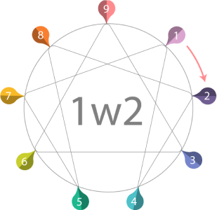

What makes Enneagram type 1 wing 2 special is the fact that they’re
still wise, principled, and ethical while having a more interpersonal
consciousness.
They are more empathetic and aware of other
people’s needs, which enforces their sense of equality and justice.
The
brilliant aspect of Enneagram type 1 wing 2 is that the typical
stubbornness of its core (type 1) is tamed by the deep sense of
compassion and the giving nature of the predominant wing (2).

They know what’s right and what’s wrong, what needs to be done and they
have the courage to overcome the obstacles ahead of them with a warm and
open-hearted attitude. They are receptive and able to cope with
conflicts with determination.
Enneagram type 1 wing 2 usually
chooses careers that involve being in contact with people, which
improves their interpersonal skills and rhetoric. They work hard to
leave a mark as they have a broad reality consciousness and are fully
aware of people’s changing power.